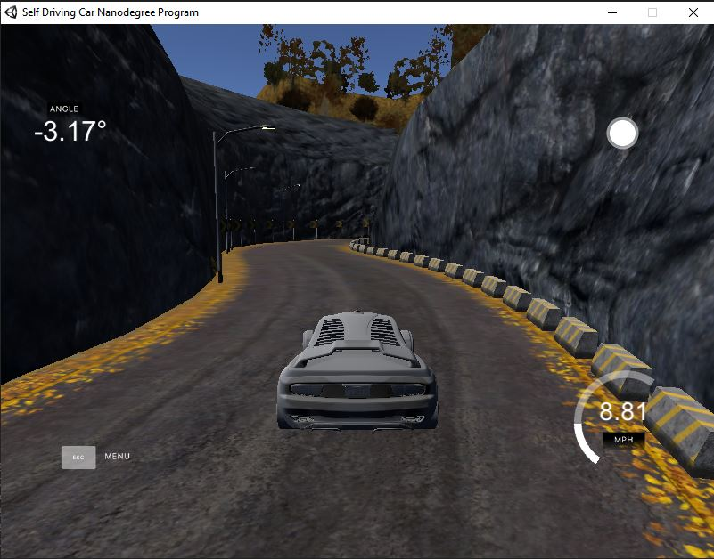
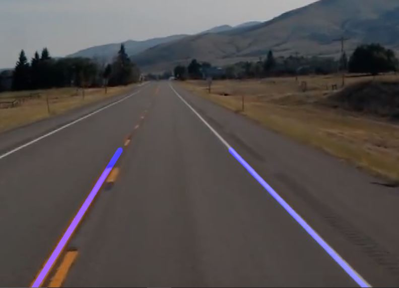
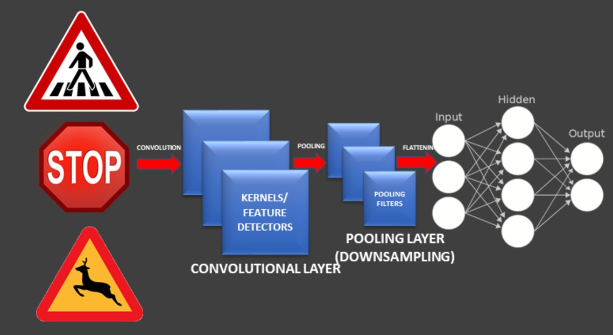
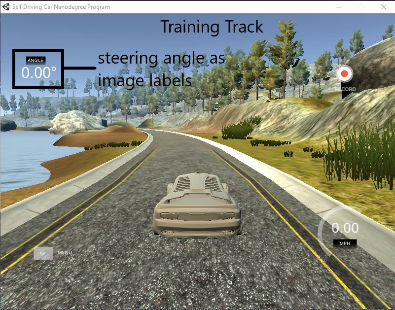
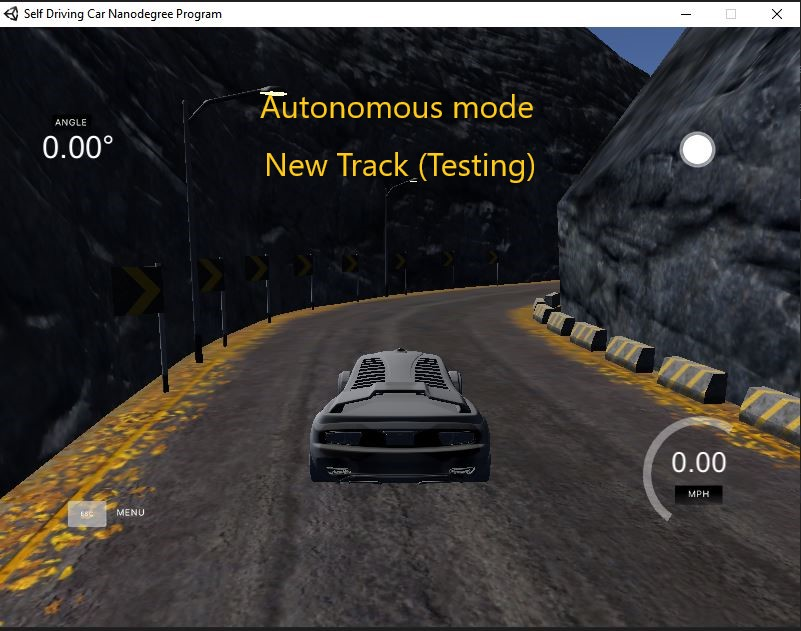

Self-propelled Vehicle Simulation
The aim of the project is to learn Computer vision techniques, deep neural network and convolutional networks with respect to, how these techniques are used in development of a autonomous vehicle. Three different algorithms are developed seperatly that is - lane detection, Deep nueral network to distinguish between different traffic signals and finally convolutional neural networks to drive the autonomous vehicle.
Lane detection algorithm
In lane detection algorithm most importantly Computer vision library is used to process the various input images and then detecting the driving lane. First the images are pre processed during which the input images are converted into a black and white image after that gaussian filter is applied to reduce the noise in the image. After this using the canny method (derivative of image matrix) all the edges are identified in the image. Then the field of view is first limited to the region of interest. The camera position on the vehicle will always capture the image upto a depth (distance) and width, using these fix dimensions from the image, the area of interest is isolated that is from the begining of the lane to the ending which makes a triangle. This triangle is then used to represent the region of interest as a white triangle on a black background. The created region of interest is imposed over the canny image (that is only edges in the image) and a bitwise operation is applied which results in a image which only have the edges of the lane on the road. Using Hough Transform the points detected on the edges are used to create lines, these lines are then shown over the original image which makes the real lanes on the road.
Different traffic signs detection algorithm
Deep nueral networks are a great tool for harnessing the power of machine learning as they can easily predict results for simple inputs and classifications, but they fail to predict complex image classifications with good accuracy. A better way is to use convolutional neural networks. Before building and training a convolutional network, the data is required for training and validating the network. First the data is loaded from open source avaliable online, these data contains the traffic signal images and their respective labels. This data before feeding into the network is first preprocessed, in the preprocessing step all the images are first converted into a black and gray format then the image intensities are equalized. After preprocessing the data, a data generator function is created, as the online data is not sufficient to train the network efficiently this data generator creates new data by changing the different image parameters as specified, hence creating new modified images for better training. Once the image data is processed, the respective labels of the images are also converted into a binary description which helps in eliminating errors while training the network. Finally convolutional network is created using the Keras python library, then this network is trained and optimized based on the traning loss and validation loss, once the satisfied losses are obtained, the model is tested using a new image without label to see how the model works. while testing it was found that the generated network was able to distinguish between traffic images with good accuracy.
Predicting steering angle using convolutional neural network
After learning the concept of Computer vision and convolutional neural networks through above mentioned small projects, finally these methods are applied to train a convolutional neural network to take input from the camera sensor and predict the steering angle to drive the autonomous vehicle on UDACITY simulator.
Using the UDACITY autonomous vehicle simulator first the data set is created, which is many images of the training track with steering angle as labels. These images are first preprocessed which includes convertion of images to a specific size, conversion to gray images and applying gaussian filter. After preprocessing of the images, data generator function is created to generate even more modified images to better train the network. After preprocessing of the training and validation data set, the convolutional neural network is created, for this specific purpose Nvidia model based network was created, which means specific Convolutional layers, Pooling layers and Dense layers. After training and optimizing the Convolutional model to obtain the required accuracy, the model is downloaded to run in parallel with the UDACITY software to test the model and simulate the vehicle.
For running the model with Simulator specific virtual network is created in python. Flask, Socket.io libraries were used, These libraries allows to create a environment that connects a soruce with the client and allows a bidirectional data transfer. In this scenario the client being the UDACITY simulator application and source being the Model. The system works in such a way that the images (camera sensor data from UDACITY) goes into the convolutional model after being preprocessed and the model ouputs the prediction of steering angle which goes in the UDACITY simulator while the speed limit being fixed hence simulating the vehicle movement on a track.
Results
After complete training of the model and setting up the model with the Simulator the vehicle was made to run on a new track (other then it was trained on) which the model has never seen before, It was observed that the vehicle was able to take the turns with quite good accuracy without touching the side rails of the track.